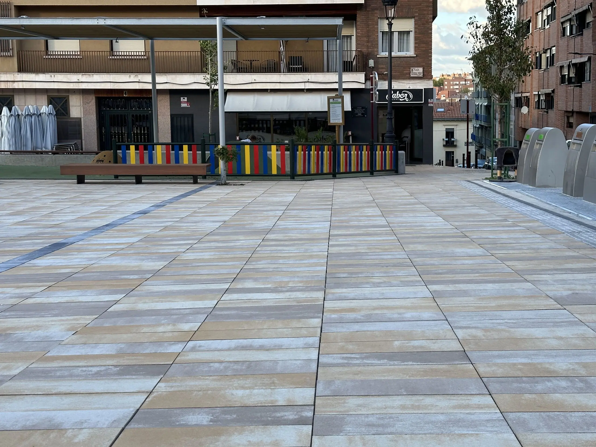
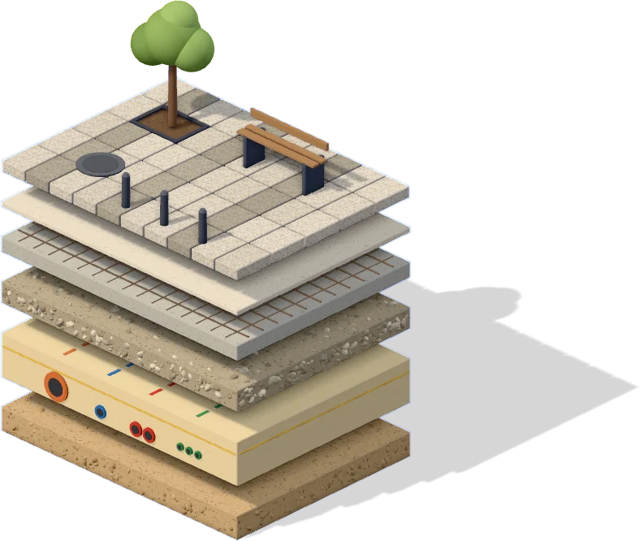
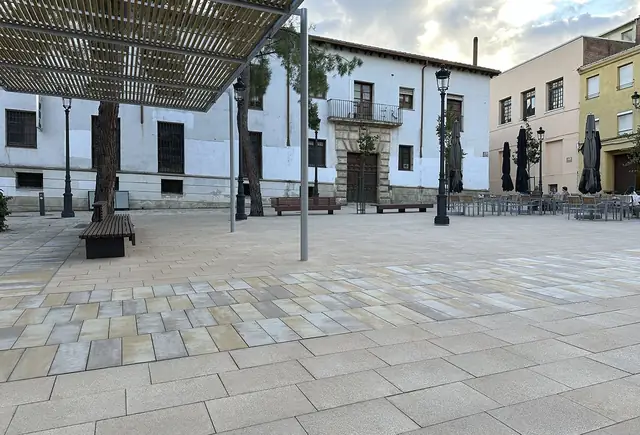

Obra civil y edificación · Desde 1997
Del plano a tu calle.

Hacemos la obra que se usa todos los días: calles, plazas, parques, redes de agua y de luz, pistas deportivas y edificios. Llevamos desde 1997 entregándola terminada, sobre todo a ayuntamientos.
- Desde
- 1997
- Obras terminadas
- 1.197
- Clientes
- 783
- Personas a tu servicio
- 47
- Certificados ISO
- 9001 · 14001 · 45001
Han confiado en nosotros
- Ayuntamiento de Guadalajara
- Ayuntamiento de Boadilla del Monte
- Ayuntamiento de Alcalá de Henares
- Ayuntamiento de Valdemorillo
- Ayuntamiento de Villalbilla
- Ayuntamiento de San Martín de la Vega
- Ayuntamiento de Orusco de Tajuña
- Ayuntamiento de Buitrago del Lozoya
- Ayuntamiento de Villanueva de la Torre
- Iberdrola
- Dago Proyectos
Bajo la plaza
Debajo de cada losa.
De una plaza se ven ocho centímetros de piedra. Debajo hay más de un metro de obra: capas compactadas una a una, hormigón y las redes del agua, la luz y el saneamiento. Baja y la abrimos.

Índice de planos
Elige por dónde empezar.
Hemos ordenado la web como un juego de planos de obra: cada hoja cuenta una cosa. Si ya sabes lo que necesitas, la hoja 05 es la de pedir oferta.
-

02 Obras terminadas Cuatro obras explicadas de cerca, el archivo con todas sus fotos, cómo cambia una calle durante la obra y el mapa de dónde trabajamos. -
 03
Qué hacemos
Una calle por dentro, capa a capa, de la demolición a la entrega. Y la edificación: equipamientos, viviendas y naves.
03
Qué hacemos
Una calle por dentro, capa a capa, de la demolición a la entrega. Y la edificación: equipamientos, viviendas y naves.
-
 04
Empresa
Quiénes somos, cómo planificamos cada obra semana a semana y el grupo que tenemos detrás.
04
Empresa
Quiénes somos, cómo planificamos cada obra semana a semana y el grupo que tenemos detrás.
Hoja 05 · Pedir oferta